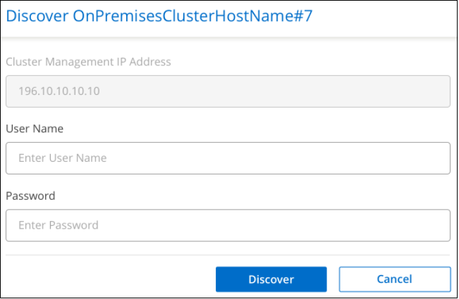
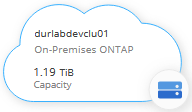

ドキュメントの変更をリクエスト
ドキュメントの変更をリクエスト GitHub で編集
GitHub で編集 寄稿者向けガイド
寄稿者向けガイドオンプレミスの ONTAP クラスタを検出しています
Cloud Manager では、オンプレミス環境、ネットアップのプライベートストレージ構成、 IBM クラウド内の ONTAP クラスタを検出できます。オンプレミスクラスタを Cloud Manager キャンバスに追加すると、 Cloud Volumes ONTAP やその他のクラウドストレージソリューションと同じツールを使用して、これらのクラスタを管理できます。
これらのシステムのストレージをプロビジョニングできるだけでなく、 Cloud Manager にこれらのシステムを追加することで、ハードウェアとソフトウェアの契約ステータス情報をデジタルウォレットで簡単に確認し、これらのクラスタに重要なクラウドベースサービスを設定できます。具体的には、クラウドへのデータのレプリケート、クラウドへのデータのバックアップ、クラウドへのコールドデータの階層化、そのデータに対するコンプライアンススキャンの実行です。
要件
-
クラウドプロバイダまたはオンプレミスにインストールされたコネクタ。
コールドデータをクラウドに階層化する場合は、コールドデータの階層化先に基づいてコネクタの要件を確認してください。
-
クラスタを Cloud Manager に追加するための、クラスタ管理 IP アドレスと管理者ユーザアカウントのパスワード。
Cloud Manager は、 HTTPS を使用して ONTAP クラスタを検出します。カスタムファイアウォールポリシーを使用する場合は、次の要件を満たす必要があります。
-
コネクタホストが、ポート 443 経由のアウトバウンド HTTPS アクセスを許可する必要があります。
コネクタがクラウドにある場合、すべてのアウトバウンド通信は事前定義されたセキュリティグループによって許可されます。
-
ONTAP クラスタでは、ポート 443 を介した着信 HTTPS アクセスが許可されている必要があります。
デフォルトの「 mgmt 」ファイアウォールポリシーでは、すべての IP アドレスからの着信 HTTPS アクセスが許可されます。このデフォルトポリシーを変更した場合、または独自のファイアウォールポリシーを作成した場合は、 HTTPS プロトコルをそのポリシーに関連付けて、 Connector ホストからのアクセスを有効にする必要があります。
-
-
ネットアップサポートサイトの有効なクレデンシャルセット。方法を参照してください "NSS アカウントを Cloud Manager に追加します"。
オンプレミスで検出されたクラスタと検出されていないクラスタを表示する
Cloud Manager の _Digital Wallet または _Discovery_service を使用すると、サポート契約を締結しているオンプレミスの ONTAP クラスタを表示、検出、管理できます。
_Digital Wallet からオンプレミスクラスタとライセンスの詳細を表示するには、次の手順を実行します。
-
Cloud Manager から、 * Digital Wallet * サービスを選択します。
-
[* On-Premises ONTAP * ] タブをクリックします。

ONTAP クラスタが、 Cloud Manager で検出されたかどうかのステータスとともに表示されます。
ネットアップサポートサイト（ NSS ）アカウントのクレデンシャルを最初に入力するように求められたら、サポートダッシュボードに入力します。アカウントを追加すると、そのアカウントに含まれているクラスタが表示されます。
_Discovery サービスからオンプレミスクラスタとライセンスの詳細を表示するには、次の手順を実行します。
-
Cloud Manager から * Discovery * サービスを選択します。
-
必要に応じて、 NSS アカウントに関連付けられた Active IQ ログインを選択します。

有効なサポート契約がある ONTAP クラスタが、 Cloud Manager で検出されたかどうかを示すステータスで表示されます。

|
サポート契約が期限切れになると、システムは検出ページから削除されます。ただし、これらのシステムは引き続きそれぞれの作業環境で管理できます。方法を参照してください "Active IQ デジタルアドバイザからサポート契約を更新してください"。 |
クラスタ情報と契約の詳細の表示
_Digital Wallet _ を使用して、クラスタの詳細、およびハードウェアとソフトウェアの契約ステータスを表示できます。
-
* デジタルウォレット * で、 * オンプレミス ONTAP * タブをクリックします。
各クラスタの行にソフトウェア契約とハードウェア契約の有効期限が表示されます。
-
契約が有効期限に近づいている場合や期限が切れている場合は、 Cloud Manager の右下にあるチャットアイコンをクリックして、契約の延長を申請できます。
-
詳細を確認するクラスタの場合は、をクリックします
 をクリックしてクラスタ情報を展開します。
をクリックしてクラスタ情報を展開します。
Cloud Manager からオンプレミスクラスタを検出する
Cloud Manager 内のオンプレミス ONTAP クラスタは、 Digital Wallet _ 、 _Discovery_service 、または _Canvas から検出できます。検出されたクラスタは、 Cloud Manager の作業環境として使用できるようになります。これにより、クラスタを管理できます。
クラスタをデジタルウォレットから検出します
ONTAP クラスタをデジタルウォレットから検出し、作業環境として追加できます。
-
* デジタルウォレット * で、 * オンプレミス ONTAP * タブをクリックします。

-
Cloud Manager で管理するクラスタの * Discover * をクリックします。
-
Discover ONTAP Cluster_page で、 admin ユーザアカウントのパスワードを入力し、 * Discover * をクリックします。

クラスタ管理 IP アドレスは、デジタルウォレットの情報に基づいて入力されます。
クラスタのステータスが、オンプレミスの ONTAP ページで * Discovered * に変わります。
Cloud Manager はクラスタを検出し、作業環境名としてクラスタ名を使用してキャンバスの作業環境に追加します。

右側のパネルでこのクラスタのサービスを有効にして、クラスタとの間でデータをレプリケートしたり、クラウドへのデータ階層化を設定したり、ボリュームをクラウドにバックアップしたり、ボリュームでコンプライアンススキャンを実行したりできます。新しいボリュームを作成したり、 System Manager を起動して高度なタスクを実行することもできます。
検出ページからクラスタを検出しています
検出ページで ONTAP クラスタを検出し、作業環境として追加できます。
-
[* 検出 ] ページで、 [ クラスタインベントリ *] タブをクリックします。

-
Cloud Manager で管理するクラスタの * Discover * をクリックします。
-
_Choose a Location_page * On-Premises ONTAP * が事前に選択されているので、 * Continue * をクリックします。
-
ONTAP クラスタの詳細ページで、管理者ユーザアカウントのパスワードを入力し、 * 追加 * をクリックします。

クラスタ管理 IP アドレスは、 Active IQ の情報に基づいて設定されます。
-
[Details & Credentials] ページで、クラスタ名が Working Environment Name として追加されるので、 [* Go] をクリックします。
Cloud Manager はクラスタを検出し、作業環境名としてクラスタ名を使用してキャンバスの作業環境に追加します。
右側のパネルでこのクラスタのサービスを有効にして、クラスタとの間でデータをレプリケートしたり、クラウドへのデータ階層化を設定したり、ボリュームをクラウドにバックアップしたり、ボリュームでコンプライアンススキャンを実行したりできます。新しいボリュームを作成したり、 System Manager を起動して高度なタスクを実行することもできます。
Canvas ページからクラスタを検出しています
ONTAP クラスタを検出し、カンバスページから作業環境として追加できます。これらの手順は、クラスタが現在サポート契約を結んでいないために、 [Digital Wallet （デジタルウォレット） ] ページまたは [Discovery （検出） ] ページに表示されない場合に使用できます。
-
キャンバスページで、 * 作業環境の追加 * をクリックし、 * オンプレミス ONTAP * を選択します。
-
プロンプトが表示されたら、コネクタを作成します。
詳細については、上記のリンクを参照してください。
-
ONTAP クラスタの詳細ページで、クラスタ管理 IP アドレスと admin ユーザアカウントのパスワードを入力し、 * 追加をクリックします。
-
[Details & Credentials] ページで、作業環境の名前と概要を入力し、 [* Go*] をクリックします。
Cloud Manager によってクラスタが検出され、キャンバスの作業環境に追加されます。
右側のパネルでこのクラスタのサービスを有効にして、クラスタとの間でデータをレプリケートしたり、クラウドへのデータ階層化を設定したり、ボリュームをクラウドにバックアップしたり、ボリュームでコンプライアンススキャンを実行したりできます。新しいボリュームを作成したり、 System Manager を起動して高度なタスクを実行することもできます。